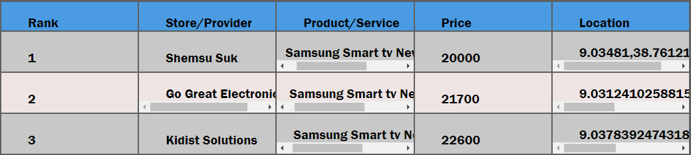

Cheapr is a market analysis and promotion system where suppliers and service providers with the cheapest prices for goods and services (with no quality reduction) are encouraged and promoted.
Cheapr detects user location and calculates to identify which stores, shop, and service providers are near the user. It uses the calculated data to suggest which stores in the user's neighbourhood have cheapest price of some product.
Cheapr analizes the prices of a product or service of the same quality. Product brand, model, quality and newness are taken into considaration whe analizing prices og goods and services
After the prices of the goods/services are analized, the goods/services are ranked starting from the cheapest.
Products/services ranked first from each category are displayed and promoted on the home page. In the future, the promotion will grow to include social media.
In last decade, the cost of living has been growing exponentially in my country. Price of goods and services growing in a worrying rate. Even with the intervantion of the government there is not visible change. This growth of cost of living mostly affected medium and low income population of the country. One of the factors for the exponential increase of cost of living is the creation of artefical demand of products by hoarding goods in warehouses until a demand for the goods increases. As a member of this section of the population, I am also affected by the severe cost of living. So I have been thinking how to help reduce cost of living in my country. Evene before, I joined ALX, I have been thinking to build a system that encourages suppliers and service providers to reduce prices for goods and services. This project is a good opportunity to put my thought into practice.
This is project a project for ALX Software Eginnering Program
Wondmagegn Abriham Chosha
Email: wabaham9@gmail.com
Github: https://github.com/wacoo